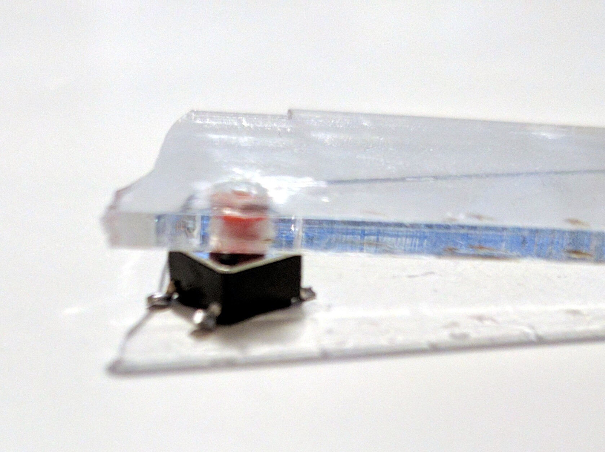

Laser-cutting Button Caps¶
Published on 2019-09-10 in PewPew M4.
As mentioned earlier, I either need to find a way to have a thicker front plate on the case, or a better way to attach the thin front plate, that won’t make it break at the screw holes. Last time I experimented a bit with gluing the front plate, but that doesn’t look good. I could try another approach: replace the acrylic plate with a transparent sticker. But before I go there, there are also several ways I can use a thicker plate.
I already have several different kinds of button switches on order — ones that are more clicky that the current ones, but also have their business end sticking higher, while having their base still fit in the 2.5mm space I have under the front plate. This is actually the biggest problem, as most tact switches out there have their base 3.5mm high. But even if those new switches work fine, there are still some problems with this approach: the surface area of the place where you press your finger is not very large, and those special switches will probably be difficult to source — that will hurt the reproducibility of the project.
Another approach is to use standard tact switches, but have button caps on top of them, that will make them both higher and wider. They could also cover the hole that would need to be cut in the top plate for their 3.5mm high bases. So I also have two kinds of such caps on order, and we will see how well those work.
The last possibility is the most interesting one: those button caps are nothing more than pieces of plastic with a hole in them for sticking on top of those switches. The hole is slightly conical, and the plastic a bit springy, so once you push them in there, they stay. What if we laser-cut out button caps from the same material as the case? We have a large hole for the display, we could put some additional shapes in there. And we could make them in the shapes we actually need — a cross for the d-pad, and some rounded rectangles for the fire buttons. The only problem is that they would have this hole where the switch goes, but that might actually not be that bad (adding extra texture for grip), and if it is, I could put some rubberized stickers on top, maybe? Also, the laser-cut holes are naturally a little bit conical (because of the laser’s colimation).
Since I don’t have an easy access to a laser-cutter, I decided to make a quick test by manually drilling a hole of the right size in a piece of acrylic, and sticking it on a tact switch. The closest size of the drill I have is 4mm, which turned out to be ever so slightly too small, so I used a reamer tool to make the hole a bit larger (and conical).
The first observation: since acrylic is not as malleable and elastic as ABS, the switch didn’t stick in the hole. I could probably improve it by having a small cut in there, to make the hole more springy. But instead I just put a drop of acrylic glue on the top of the hole, and it sticks. There is enough wiggle room to make it work properly, and I might add a bead in the center of the d-pad cross to make it work like a real d-pad.
The hole on top doesn’t feel unpleasant to touch, and I could probably add some more holes around it for a more consistent texture. I think this is an interesting direction, and I might give it a try.